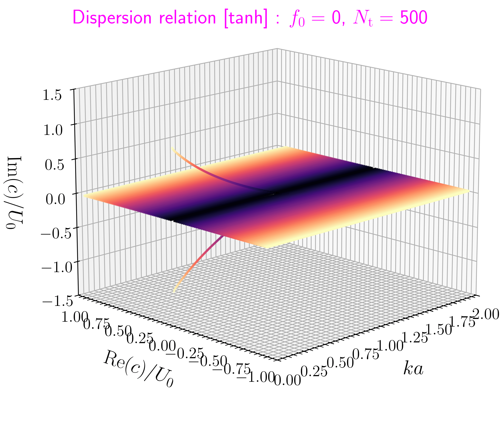
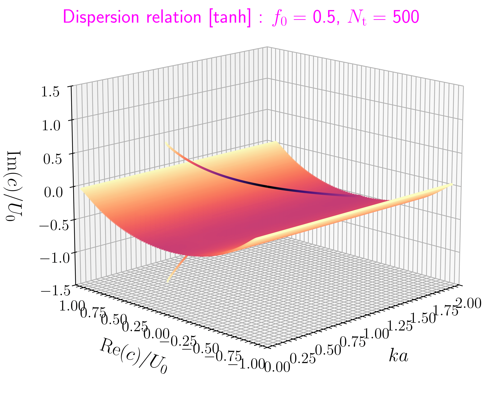
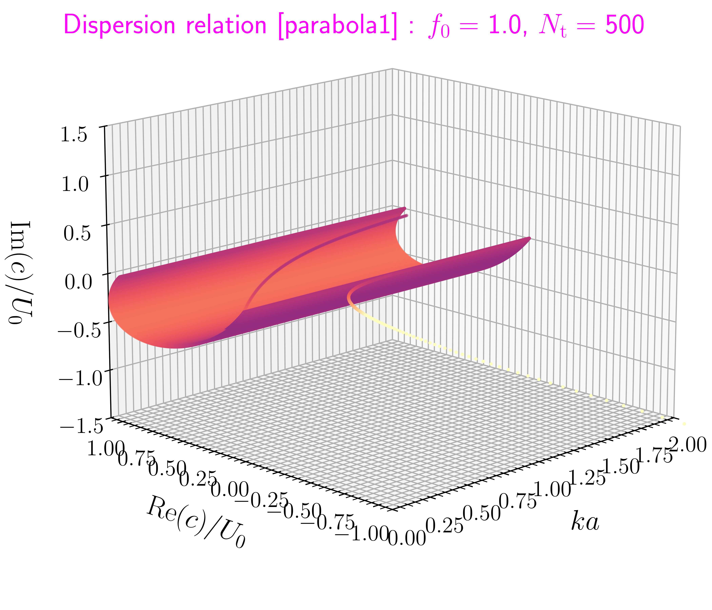
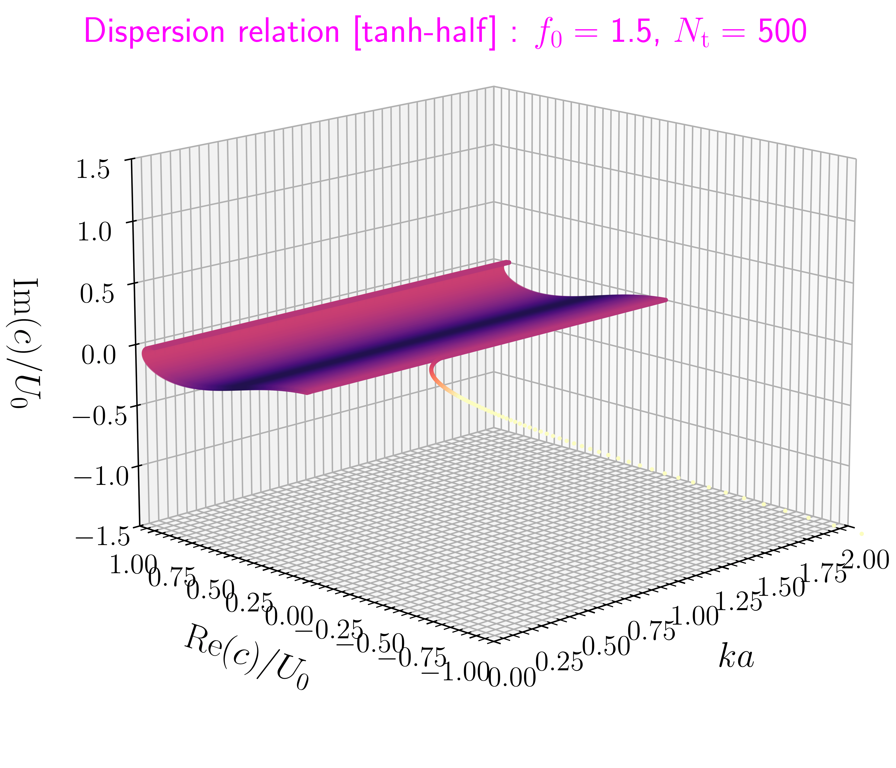

[MIS21-P06] 非粘性平行シアー流の quasi-mode
合同セミナー [] / JpGU 2024 []
[MIS21-P06]
非粘性平行シアー流の quasi-mode
-
要旨
- 4 年生向けイントロ (JpGU では圧縮 or 補足資料へ)
- シアー不安定は 2 つの固有モードの共鳴で起こる
- (普通の意味での) 固有モードがない場合がある
- スペクトル変形法で「固有モードなりそこない」を探す
- 外核最上部安定成層の MHD 波動へ応用したい
中島 涼輔 (九州大学 大学院理学研究院)
本研究は JSPS 科研費 (JP24K07177,
JP24K00694) と
核融合科学研究所 一般共同研究 (NIFS24KIIC001)
の助成を受けたものです。
Like this


非粘性・非圧縮の 2 次元流体の基礎方程式
- 2 次元デカルト座標 $(x,y)$, 非粘性, 密度一様
-
運動方程式, 連続の式
[速度: $\bm{u}=(u_x,u_y)$, 密度: $\rho$, 圧力: $p$] \[\left[\frac{\uppartial}{\uppartial t}+(\bm{u}\ip\grad)\right]\bm{u}\,=\,-\frac{1}{\rho}\grad p\,,\quad\div\bm{u}\,=\,0\] -
流線関数 $\psi$, 渦度 $\zeta$ (速度 $\bm{u}$
の書き換え, 連続の式を満たす)
\[u_x\equiv\frac{\uppartial \psi}{\uppartial y}\,,\quad u_y\equiv-\frac{\uppartial \psi}{\uppartial x}\,,\quad\zeta\,\equiv\,\frac{\uppartial u_y}{\uppartial x}-\frac{\uppartial u_x}{\uppartial y}\,=\,-\nabla^2\psi\]
考える問題は線形安定論
-
$x$ 方向は無限に広がっている
$y$ 方向は $y_1$, $y_2$ (無限遠でも可) に壁 - 境界条件: $u_y=0$ @$y=y_1$, $y_2$
-
基準状態 (定常解, シアー流)
$\bm{u}=U(y)\hat{\bm{e}}_x$, $p=0$ -
基準状態からの小さなずれの
振る舞いを調べる ($\varepsilon\ll1$)\[\begin{align*} u_x\,&=\,U(y)+\varepsilon u_{1x}+\varepsilon^2 u_{2x}+\mathrm{O}(\varepsilon^3)\\ u_y\,&=\,\phantom{U(y)+\,} \varepsilon u_{1y}+\varepsilon^2 u_{2y}+\mathrm{O}(\varepsilon^3)\\ \psi\,&=\,\varPsi(y)+\varepsilon \psi_1+\varepsilon^2 \psi_2+\mathrm{O}(\varepsilon^3)\,,\quad U=(\upd\varPsi/\upd y)\\ \zeta\,&=\,Z(y)+\varepsilon \zeta_1+\varepsilon^2 \zeta_2+\mathrm{O}(\varepsilon^3)\,,\quad Z=-(\upd U/\upd y)\\ p\,&=\,\phantom{U(y)+\,}\varepsilon p_1+\varepsilon^2p_2+\mathrm{O}(\varepsilon^3) \end{align*}\]
線形論では摂動方程式に注目
-
前スライドの $\varepsilon$ で展開した表現
を基礎方程式
\[\begin{align*} u_x\,&=\,U(y)+\varepsilon u_{1x}+\varepsilon^2 u_{2x}+\mathrm{O}(\varepsilon^3)\\ u_y\,&=\,\phantom{U(y)+\,} \varepsilon u_{1y}+\varepsilon^2 u_{2y}+\mathrm{O}(\varepsilon^3)\\ \psi\,&=\,\varPsi(y)+\varepsilon \psi_1+\varepsilon^2 \psi_2+\mathrm{O}(\varepsilon^3)\,,\quad U=(\upd\varPsi/\upd y)\\ \zeta\,&=\,Z(y)+\varepsilon \zeta_1+\varepsilon^2 \zeta_2+\mathrm{O}(\varepsilon^3)\,,\quad Z=-(\upd U/\upd y)\\ p\,&=\,\phantom{U(y)+\,}\varepsilon p_1+\varepsilon^2p_2+\mathrm{O}(\varepsilon^3) \end{align*}\]
に代入\[\left[\frac{\uppartial}{\uppartial t}+(\bm{u}\ip\grad)\right]\bm{u}\,=\,-\frac{1}{\rho}\grad p\,,\quad\div\bm{u}\,=\,0\]
-
$\varepsilon\ll 1$ より $\mathrm{O}(\varepsilon^0)$
の項と $\mathrm{O}(\varepsilon^1)$
の項などを分けて考える
- $\mathrm{O}(\varepsilon^0)$ の項は, 定常解の部分なので既に成立
-
$\mathrm{O}(\varepsilon^1)$
の項を取り出して変形すると, 例えば
\[\left(\frac{\uppartial}{\uppartial t}+U\frac{\uppartial}{\uppartial x}\right)\zeta_1-u_{1y}\frac{\upd^2 U}{\upd y^2}\,=\,0\]これらの式 (摂動方程式) について調べる → 線形論
- $\mathrm{O}(\varepsilon^2)$ の項には, $u_{2x}$ や $u_{1x}u_{1y}$ が含まれる
平均を考えてみると...
- 線形論では, $u_{2x}$ など 2 次の量の全貌はわからない
-
$x$ 方向 1 波長平均を考える
- $\overline{(\cdots)}=(1/\lambda_x)\int_x^{x+\lambda_x}(\cdots)\upd x_*$ [$\lambda_x$: $x$ 方向の波長]
-
便利な性質
$\overline{u_{1y}}=\overline{u_{2y}}=0$, $\overline{\zeta_1u_{1y}}=-[\uppartial(\overline{u_{1x}u_{1y}})/\uppartial y]$ -
$u_{2x}$ の時間発展式は
\[\frac{\uppartial \overline{u_{2x}}}{\uppartial t}+\frac{\uppartial(\overline{u_{1x}u_{1y}})}{\uppartial y}\,=\,0\]
- $\overline{u_{2x}}$ の時間変化なら, 線形論から計算できる
擬運動量密度は $\overline{u_{2x}}$ の代用表現
-
Lagrange 変位 $\bm{\xi}_1$ を導入
$[(\uppartial/\uppartial t)+U(\uppartial/\uppartial x)]\bm{\xi}_1=\bm{u}_1+(\bm{\xi}_1\ip\grad)(U\hat{\bm{e}}_x)$ -
$\zeta_1$ の時間発展式と組み合わせると
\[\frac{\uppartial\mathcal{P}}{\uppartial t}+\frac{\uppartial(\overline{u_{1x}u_{1y}})}{\uppartial y}\,=\,0\,,\quad\mathcal{P}\,=\,\overline{\zeta_1\xi_{1y}}-\frac{\overline{\xi_{1y}^2}}{2}\frac{\upd^2U}{\upd y^2}\]フラックス項が $\overline{u_{2x}}$ の時間発展式\[\left(\frac{\uppartial}{\uppartial t}+U\frac{\uppartial}{\uppartial x}\right)\zeta_1-u_{1y}\frac{\upd^2 U}{\upd y^2}\,=\,0\]
のものと同じ (!)\[\frac{\uppartial \overline{u_{2x}}}{\uppartial t}+\frac{\uppartial(\overline{u_{1x}u_{1y}})}{\uppartial y}\,=\,0\]
-
$\rho\mathcal{P}$ (擬運動量密度) を
$\rho\overline{u_{2x}}$ と同じように時間発展するものとみなせる
擬運動量の有用性いろいろ
-
領域全体で積分すると$(\upd/\upd t)\int_{y_1}^{y_2}(\rho\mathcal{P})\upd y=0$
\[\frac{\uppartial\mathcal{P}}{\uppartial t}+\frac{\uppartial(\overline{u_{1x}u_{1y}})}{\uppartial y}\,=\,0\,,\quad\mathcal{P}\,=\,\overline{\zeta_1\xi_{1y}}-\frac{\overline{\xi_{1y}^2}}{2}\frac{\upd^2U}{\upd y^2}\]
→ 特に, 線形不安定の場合は $\int_{y_1}^{y_2}(\rho\mathcal{P})\upd y=0$ [後述] -
$\overline{u_x}=U+\varepsilon^2\overline{u_{2x}}+\mathrm{O}(\varepsilon^3)$
より, $\overline{u_{2x}}$ の時間発展は
1 次の量 (波) に起因する基準状態の時間発展とも解釈できる
[過去スライド2023後期; e.g. Renaud & Venaille (2020)] -
その他 (紹介だけ)
-
波線理論, 平均変分原理
[前回スライド; e.g. Bretherton & Garrett (1968)] - Rayleigh の変曲点定理 [e.g. Vallis (2017) Chapter 9]
- 固有モード間の直交性 [過去スライド2023後期; e.g. Held (1985)]
-
波線理論, 平均変分原理
線形なので Fourier 変換して考える
-
1 次の量に対して
$\psi_1(x,y,t)=\mathrm{Re}[\tilde{\psi}(y;k,c)\upe^{\upi
k(x-ct)}]$ など
[$k$: 波数 ($\in\mathbb{R}$), $c$ :位相速度 ($\in\mathbb{C}$)]
$\upe^{\upi k(x-ct)}=\upe^{\upi k(x-\mathrm{Re}(c)t)}\upe^{k\mathrm{Im}(c)t}$ より $k\mathrm{Im}(c)>0$ で不安定 -
摂動方程式 (Rayleigh 方程式)
\[(c-U)\tilde{\zeta}\,=\,\frac{\upd^2U}{\upd y^2}\tilde{\psi}\,,\quad\tilde{\zeta}\,=\,-\left(\frac{\upd^2}{\upd y^2}-k^2\right)\tilde{\psi}\]
\[\left(\frac{\uppartial}{\uppartial t}+U\frac{\uppartial}{\uppartial x}\right)\zeta_1-u_{1y}\frac{\upd^2 U}{\upd y^2}\,=\,0\]
- Van Kampen モード (形式解) [Van Kampen (1955)] \[\tilde{\zeta}\,=\,\mathrm{PV}\frac{(\upd^2U/\upd y^2)}{c-U}\tilde{\psi}+\mathcal{D}(k,c)\delta(c-U)\]
Fourier 変換 ver. の擬運動量
-
以下, $\mathcal{D}=0$
→ このとき $\mathcal{P}=\upe^{2k\mathrm{Im}(c)t}|\tilde{\zeta}|^2/4(\upd^2 U/\upd y^2)$
\[\tilde{\zeta}\,=\,\mathrm{PV}\frac{(\upd^2U/\upd y^2)}{c-U}\tilde{\psi}+\mathcal{D}(k,c)\delta(c-U)\]
\[\begin{align*} \mathcal{P}\,&=\,\overline{\zeta_1\xi_{1y}}-\frac{\overline{\xi_{1y}^2}}{2}\frac{\upd^2U}{\upd y^2}\\ (-\upi kc+\upi kU)\tilde{\xi}_{1y}\,&=\,-\upi k\tilde{\psi}_1 \end{align*}\]
-
不安定 or 減衰なら, 擬運動量は $0$
[Hayashi & Young (1987)]
\[\mathrm{Im}(c)\int_{y_1}^{y_2}(\rho\mathcal{P})\upd y=0\]
-
中立 ($\mathrm{Im}(c)=0$) なら
分散曲線の傾きと擬運動量は逆符号 [Iga (1999)]\[\frac{\upd c}{\upd k}\int_{y_1}^{y_2}(\rho\mathcal{P})\upd y\,<\,0\]
ここまでのまとめ
-
実際に解く式 (Rayleigh 方程式)
\[(c-U)\tilde{\zeta}\,=\,\frac{\upd^2U}{\upd y^2}\tilde{\psi}\,,\quad\tilde{\zeta}\,=\,-\left(\frac{\upd^2}{\upd y^2}-k^2\right)\tilde{\psi}\]
-
$x$ 方向の波数 $k$ と基準状態のシアー流 $U$
を与えたとき
境界条件を満たす位相速度 $c$ と流線関数 $\tilde{\psi}$ の組を探す - $k\mathrm{Im}(c)>0$ のとき不安定 (振幅が指数的に増加)
-
$x$ 方向の波数 $k$ と基準状態のシアー流 $U$
を与えたとき
-
$\mathcal{D}=0$ のとき
\[\tilde{\zeta}\,=\,\mathrm{PV}\frac{(\upd^2U/\upd y^2)}{c-U}\tilde{\psi}+\mathcal{D}(k,c)\delta(c-U)\]
- 不安定 or 減衰 ($\mathrm{Im}(c)\neq0$) のとき, $(\text{擬運動量})=0$
- 中立 ($\mathrm{Im}(c)=0$) のとき, $(\upd c/\upd k)\text{(擬運動量)}<0$
ひとまず簡単な具体例
-
ほぼ 3 層モデル
\[\frac{U(y)}{U_0}\,=\, \begin{cases} 1 & \phantom{-}a+d < y\\[1pt] 1-\dfrac{(a+d-y)^2}{4ad} & \phantom{-}a-d < y \leq a+d \\[3pt] y/a & -a+d < y \leq a-d\\[1pt] -1+\dfrac{(-a-d-y)^2}{4hd} & -a-d < y \leq -a+d\\[3pt] -1 & \phantom{-a-d} \leq y \leq -a-d \end{cases}\]
$d=0.05a$, $y=\pm2a$ で放射境界 \[(c-U)\tilde{\zeta}\,=\,\frac{\upd^2U}{\upd y^2}\tilde{\psi}\,,\quad\tilde{\zeta}\,=\,-\left(\frac{\upd^2}{\upd y^2}-k^2\right)\tilde{\psi}\]
[e.g. Baines+ (1996),
Carpenter & Guha (2019)] - 2 つのエッジ波 ($\mathrm{Im}(c)=0$, $\mathcal{D}=0$) の分散曲線がぶつかる $k=k_\mathrm{crit}$ で不安定が発生
- $\mathcal{D}\neq0$, $U=c$: 連続スペクトル
モード 青: $d\to0$ の解析解 ($\mathcal{D}=0$)
シアー不安定のメカニズム
-
$u_{1y}$ が
$\zeta$ を変化\[\left(\frac{\uppartial}{\uppartial t}+U\frac{\uppartial}{\uppartial x}\right)\zeta_1-u_{1y}\frac{\upd^2 U}{\upd y^2}\,=\,0\]
- 2 つのエッジ波が強め合う配置で不安定
$y=\pm2a$ で放射境界
シアー不安定のメカニズム
- ∴ 不安定の発生は 2 つのエッジ波の共鳴だと理解されている
-
数学的な記述: wave interaction theory
[過去スライド2023前期; e.g. Heifetz+ (2020)] -
擬運動量の観点からの説明
不安定 or 減衰 $\mathrm{Im}(c)\neq0$ のとき, $(\text{擬運動量})=0$
中立 $\mathrm{Im}(c)=0$ のとき, $(\upd c/\upd k)\text{(擬運動量)}<0$-
$c>0$ のエッジ波は負の擬運動量
$c<0$ のエッジ波は正の擬運動量 -
不安定モード
は擬運動量を
エッジ波間で
やりとり\[\frac{\uppartial\mathcal{P}}{\uppartial t}+\frac{\uppartial(\overline{u_{1x}u_{1y}})}{\uppartial y}\,=\,0\]
して $0$
-
$c>0$ のエッジ波は負の擬運動量
他の $U$ の例では...
-
$\tanh$ 型
\[\frac{U(y)}{U_0}\,=\,\tanh y\]
$y=\pm5$ で放射境界
[e.g. Iga (2013)] -
エッジ波の分散曲線がない
(!)
共鳴による説明 (?) -
一方, 不安定モードの構造は
3 層モデル
のものと
似ている
線: 渦度 $\zeta_1$
モード 水色: $(\upd^2 U/\upd y^2)|_{U=c}\neq0$
本研究で明らかにしたい問い
-
シアー不安定は
2 つの中立なモード (エッジ波) の共鳴で起こるが
エッジ波を表す分散曲線が行方不明になり
上手く説明できない例がある -
対応するエッジ波は波的な性質を保ちつつも
固有モードになり損なっているのではないかと考えた -
「固有モードなり損ない」の計算に有効な
スペクトル変形法という数値解法を見つけたので
シアー不安定の問題に適用してみる
もう少し具体例
-
ほぼ 3 層モデル
の
\[\frac{U(y)}{U_0}\,=\, \begin{cases} 1 & \phantom{-}a+d < y\\[1pt] 1-\dfrac{(a+d-y)^2}{4ad} & \phantom{-}a-d < y \leq a+d \\[3pt] y/a & -a+d < y \leq a-d\\[1pt] -1+\dfrac{(-a-d-y)^2}{4hd} & -a-d < y \leq -a+d\\[3pt] -1 & \phantom{-a-d} \leq y \leq -a-d \end{cases}\]
繋ぎ目を太らせる$d=0.6a$, $y=\pm2a$ で放射境界 -
エッジ波の分散曲線は
$(\upd^2 U/\upd y^2)|_{U=c}\neq0$ の領域を
避けながら存在
モード 青: $d\to0$ の解析解 ($\mathcal{D}=0$) 水色: $(\upd^2 U/\upd y^2)|_{U=c}\neq0$
もっと具体例
-
ほぼ 5 層モデル
\[\frac{U(y)}{U_0}\,=\, \begin{cases} 1 & \phantom{-}a+d < y \leq y_2 \\[1pt] 1-\dfrac{[1-(U_1/U_0)](a+d-y)^2}{4(a-b)d} & \phantom{-}a-d < y \leq a+d \\[3pt] \dfrac{1-(U_1/U_0)}{a-b}(y-a)+1 & \phantom{-}b+d < y \leq a-d \\[3pt] \dfrac{[1-(U_1/U_0)](b-d-y)^2}{4(a-b)d}-\dfrac{(U_1/U_0)(b+d-y)^2}{4bd}+(U_1/U_0) & \phantom{-}b-d < y \leq b+d \\[3pt] \dfrac{(U_1/U_0)}{b}y & -b+d < y \leq b-d\\[3pt] \dfrac{(U_1/U_0)(-b-d-y)^2}{4bd}-\dfrac{[1-(U_1/U_0)](-b+d-y)^2}{4(a-b)d}-(U_1/U_0) & -b-d < y \leq -b+d \\[3pt] \dfrac{1-(U_1/U_0)}{a-b}(y+a)-1 & -a+d < y \leq -b-d \\[3pt] -1+\dfrac{[1-(U_1/U_0)](-a-d-y)^2}{4(a-b)d} & -a-d < y \leq -a+d \\[1pt] -1 & \phantom{-a-}y_1 \leq y \leq -a-d \end{cases}\]
$d=0.2a$, $b=a/3$, $U_1=U_0/2$
$y=\pm2a$ で放射境界
モード 水色: $(\upd^2 U/\upd y^2)|_{U=c}\neq0$
$(\upd^2U/\upd y^2)|_{U=c}$ がゼロ or 非ゼロが重要
- $(\upd^2U/\upd y^2)|_{U=c}\neq0$ の範囲がエッジ波の禁止帯
-
$U=c$ となる $y$ を $y_\mathrm{c}$ とする
(Rayleigh 方程式の確定特異点)\[(c-U)\tilde{\zeta}\,=\,\frac{\upd^2U}{\upd y^2}\tilde{\psi}\,,\quad\tilde{\zeta}\,=\,-\left(\frac{\upd^2}{\upd y^2}-k^2\right)\tilde{\psi}\]
-
$y=y_\mathrm{c}$ まわりの Frobenius 級数解
$\tilde{\psi}=C_\mathrm{I}\tilde{\psi}_\mathrm{I}+C_\mathrm{II}\tilde{\psi}_\mathrm{II}$ [$C_\mathrm{I}$, $C_\mathrm{II}$: 定数]\[\begin{align*} \tilde{\psi}_\mathrm{I}\,&=\,(y-y_\mathrm{c})+\mathrm{O}\left[(y-y_\mathrm{c})^2\right]\\ \tilde{\psi}_\mathrm{II}\,&=\,\frac{\textcolor{blue}{(\upd^2 U/\upd y^2)|_{y=y_\mathrm{c}}}}{(\upd U/\upd y)|_{y=y_\mathrm{c}}}(y-y_\mathrm{c})\textcolor{red}{\ln|y-y_\mathrm{c}|}+\mathrm{O}(1) \end{align*}\] -
対数特異性 @$(\upd^2U/\upd
y^2)|_{y=y_\mathrm{c}}\neq0$ となる
$y=y_\mathrm{c}$
- $c\in\mathbb{C}$, $y_\mathrm{c}\in\mathbb{C}$ より, $\tilde{\psi}$ は多価関数の可能性
$k=k_\mathrm{crit}$ に対応する $c$ が禁止帯の外のとき
-
$\tilde{\psi}$ の $y$, $k$, $c$
依存性を知っているていで, 例えば形式解
より
\[\tilde{\zeta}\,=\,\mathrm{PV}\frac{(\upd^2U/\upd y^2)}{c-U}\tilde{\psi}+\mathcal{D}(k,c)\delta(c-U)\]
\[\int_{y_1}^{y_2}\tilde{\zeta}\tilde{\psi}^*\upd y\,=\,\mathrm{PV}\int_{y_1}^{y_2}\frac{(\upd^2U/\upd y^2)}{c-U}|\tilde{\psi}|^2\upd y+\mathcal{D}(k,c)\tilde{\psi}^*(y_\mathrm{c})\]の $\mathcal{D}=0$ をエッジ波と不安定モードの分散関係とみなす -
$U(y)$ が単調増加関数の場合 (cf. ほぼ 3 層モデル)
$k=0$ $k=k_\mathrm{crit}$ 禁止帯$U''\neq0$ $y_\mathrm{c}$ の位置 \[\begin{align*} \tilde{\psi}&=C_\mathrm{I}\bigl[(y-y_\mathrm{c})+\cdots\bigr]\\ &+C_\mathrm{II}\bigl[1+\cdots\bigr] \end{align*}\]- $\tilde{\psi}$ に対数特異性なし → $\mathcal{D}$ は一価関数
$k=k_\mathrm{crit}$ に対応する $c$ が禁止帯のとき
-
$U(y)$ が単調増加関数の場合 (cf. $\tanh$ 型)
$k=0$ $k=k_\mathrm{crit}$ 禁止帯$U''\neq0$ $y_\mathrm{c}$ の位置 \[\begin{align*} \tilde{\psi}&=C_\mathrm{I}\bigl[(y-y_\mathrm{c})+\cdots\bigr]\\ &+C_\mathrm{II}\bigl[(y-y_\mathrm{c})\ln(y-y_\mathrm{c})+\cdots\bigr] \end{align*}\]- $0\leq k\leq k_\mathrm{crit}$ (不安定モード) では $\mathcal{D}=0$
-
もし仮に分散曲線が $k>k_\mathrm{crit}$
にも繋がっていて
しかも, そのとき $\mathrm{Im}(c)<0$ だと仮定すると,
$y=y_\mathrm{c}$ が実軸を横切るときに $\ln(y-y_\mathrm{c})$ の虚部が不連続に変化 - そんな「固有モード」がもしあれば, 分散関係は $\mathcal{D}+\upi\mathcal{D}_1=0$
$\mathcal{D}+\upi\mathcal{D}_1=0$ に対応する括弧付きの固有モード
-
$\mathcal{D}\neq 0$ なので,
普通の固有モードとは区別される
(e.g. quasi-mode, Landau pole) - 非物理的な解というわけでもないらしい (固有モードなり損ない ?)
- Landau (1946)
-
無衝突プラズマの式から Landau 減衰を導出
指数関数的に減衰するプラズマ振動, 波と粒子の相互作用 - Briggs+ (1970)
-
非粘性流体の問題に応用
波と流体の相互作用, 連続スペクトルの一部分の別表現であると指摘 - Schecter+ (2000)
-
数値実験とプラズマによるアナログ実験で観測
連続スペクトルによる代数的減衰 (位相混合) が起こる前に見られる - Dixit & Govindarajan (2011)
-
quasi-mode と中立モードの間の相互作用による
不安定の発生をおそらく初めて示した
ここまでの結果の計算に用いた方法
-
Chebyshev 選点法
- 放射境界条件: $(\upd\tilde{\psi}/\upd y)\pm k\tilde{\psi}=0$ @$y=y_1$, $y_2$
-
座標変換: $y(s)=y_1+(y_2-y_1)g(s)$
\[g(s)\,=\,\begin{cases} (s+1)/2 & \\
[\sin^{-1}(\alpha s)/\sin^{-1}(\alpha)+1]/2
& (\text{$\tanh$ 型で使用}, \alpha=0.999)
\end{cases}\]
- Chebyshev 多項式展開: $\tilde{\psi}(s)=\sum_{n=0}^{N_\mathrm{t}}\tilde{\psi}_nT_n(s)$
- Gauss-Lobatto 選点: $s_m\equiv\cos(m\pi/N_\mathrm{t})$ ($m=1,2,\ldots,N_\mathrm{t}-1$)
-
分点上で Rayleigh 方程式を満たす
$N_\mathrm{t}-1$ 本の式に
境界条件を加えた一般化固有値問題
quasi-mode を計算するための解法の変更
-
スペクトル変形法
(複素座標スケーリング法 in 量子多体系)
[e.g. Crawford & Hislop (1989), Spencer & Rasband (1997);
過去スライド2022後期] -
スペクトル変形ありの Chebyshev 選点法
-
座標変換:
$y(s)=y_1+(y_2-y_1)g(s)\textcolor{red}{+\upi
f(s)}$
本発表では $f(s)=f_0(s+1)(s-1)$ -
不安定モードから繋がる quasi-mode
に対応する $y=y_\mathrm{c}$ は
$s$ 軸に沿って左手側のまま ($\mathcal{D}=0$) なので
quasi-mode を普通の固有モードのように計算できる
-
座標変換:
$y(s)=y_1+(y_2-y_1)g(s)\textcolor{red}{+\upi
f(s)}$
- [注] この方法は, $U(y)$ が正則関数でなければ使えない
結果
-
$\tanh$ 型の場合 (色は $|c|$)
w/o スペクトル変形 w/ スペクトル変形  quasi-mode (!) 連続スペクトル
$U(y(s))=c$ -
得られた quasi-mode の位相速度は純虚数であり
Iga (2013) の方法で見つかる
「隠された分散曲線」とは合わない (!)
結果 (部分系の場合)
-
quasi-mode $=$ 連続スペクトルの一部分だとすると
部分系 ($0<y<y_2$) の quasi-mode はどうなるか ?$d=a$, $y=0,2a$ で放射境界
色は $|c-0.5|$ほぼ 3 層モデルの半分  quasi-mode (!)$\tanh$ 型の半分  $y=0$,$5$で放射境界
色は $|c-0.5|$ -
$(\upd^2 U/\upd y^2)=\text{const.}$ (ほぼ 3
層モデルの繋ぎ目部分) の場合は
禁止帯から quasi-mode を発見 ($d=0.6$, $0.4$ でも確認) - $\tanh$ 型の場合は quasi-mode は見つからなかった (or 見つけ方が悪い)
結論
-
シアー不安定を説明する相互作用する固有モードのペアがない場合
quasi-mode がその代理をしているのではないか
という仮説の検証を行った -
スペクトル変形法を用いて quasi-mode
の「分散曲線」を求めた
- $\tanh$ 型: 純虚数の位相速度をもつ quasi-mode あり
- ほぼ 3 層モデルの部分系: quasi-mode あり
- $\tanh$ 型の部分系: quasi-mode なし
-
中立モードの禁止帯から quasi-mode
が見つかる場合と
見つからない場合があり, 仮説の正誤はまだはっきりしない -
シアー不安定の問題の quasi-mode
の理解を固めた上で
外核最上部安定成層の MHD 波動へ応用したい
合同セミナー向け 今後の課題
-
quasi-mode の「固有関数」
-
中島 (JpGU2023)
の方法はあんまりうまくいかない
- スペクトル変形法では複素 $y(s)$ 上の固有関数が求まる (実空間でない)
- Chebyshev 多項式を $y_1\leq\mathrm{Re}(y)\leq y_2$ かつ $\mathrm{Im}(y)=0$ となる複素 $s$ 座標へ解析接続する
-
中島 (JpGU2023)
の方法はあんまりうまくいかない
- quasi-mode の漸近解析 (例えば $k\to\infty$)
-
quasi-mode (指数的減衰) や位相混合 (代数的減衰)
と
擬運動量, 基準状態の時間発展の関係性を
中島はちゃんと理解していない -
quasi-mode と
小さい粘性ありの場合の固有モードとの関係性は
まだ勉強中で中島はちゃんと理解していない
[補足] 連続スペクトル・位相混合
- $(\upd^2U/\upd y^2)=0$ のとき, $[(\uppartial/\uppartial t)+U(\uppartial/\uppartial x)]\zeta_1=0$
-
この解は, $\zeta_1=f(x-Ut)g(y)$
[$f$, $g$ は任意関数]
e.g. $\zeta_1=\cos[k(x-Ut)]=\mathrm{Re}[\mathrm{e}^{ik(x-Ut)}]=\mathrm{Re}[\int\delta(c-U)\mathrm{e}^{ik(x-ct)}\upd c]$ - これは, 形式解 $\tilde{\zeta}=\mathcal{D}\delta(c-U)$ の $\mathcal{D}=1$ に対応
-
$[(\uppartial^2/\uppartial
y^2)-k^2]G(y,y_*)=-\delta(y-y_*)$ を満たす
$G(y,y_*)$ を用いて, $\nabla^2\psi_1\,=\,-\zeta_1$
($\psi_1=\mathrm{Re}[\hat{\psi}(y,t)\mathrm{e}^{\mathrm{i}kx}]$)
を解くと,
$\hat{\psi}(y,t)\,=\,\int_{y_1}^{y_2}G(y,y_*)\mathrm{e}^{-\mathrm{i}kU(y_*)t}\upd
y_*$
2 回部分積分すると, $\mathrm{e}^{-\mathrm{i}kU(y)t}/k^2(\upd U/\upd y)t^2$ のような項など出てくる - $\zeta_1$ は減衰しないが, $\psi_1$ は代数的に減衰する